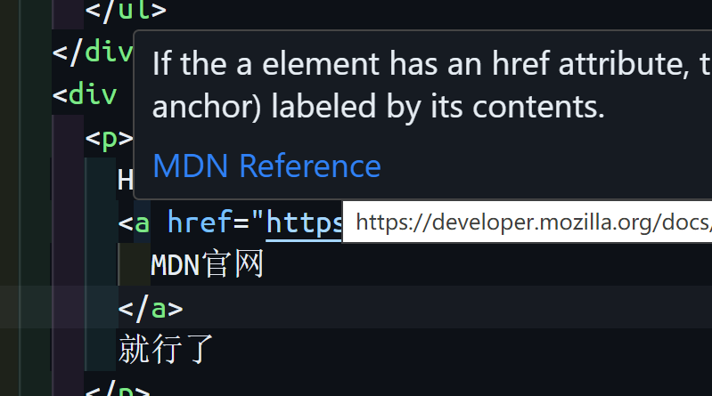
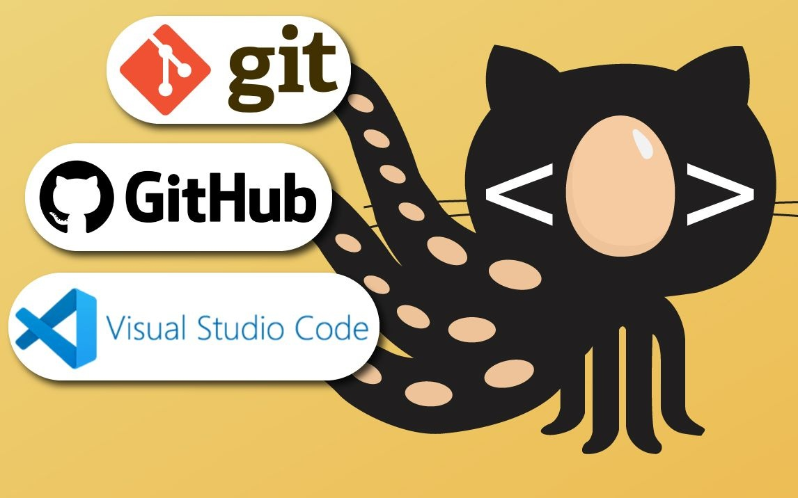
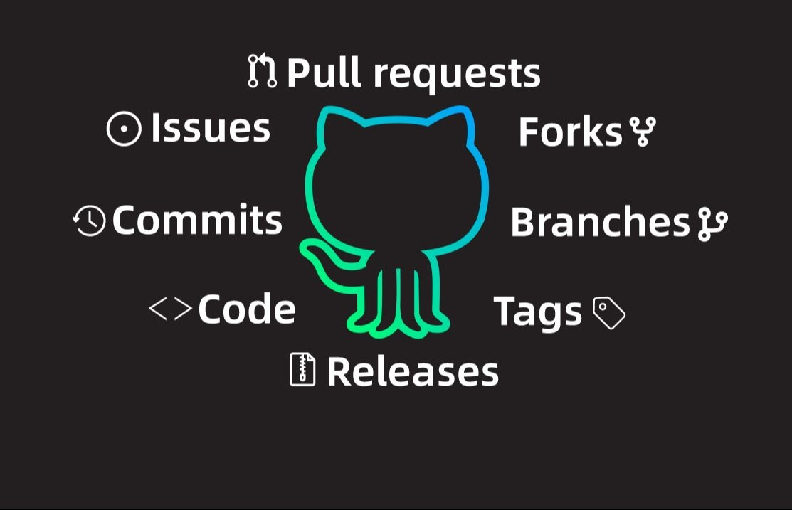

HTML、CSS、Javascript三件套看
MDN官网
就行了
初学者看Guides，查询看Reference或者搜索。
在VS Code鼠标悬停到HTML、CSS、JS上出现的参考链接就是MDN的。
学习前端肯定少不了Git和Github，看下面三个视频就够了。
Git 讲Git的基本原理和使用方法。
SSH 搭建本地仓库和远程仓库的连接。
Github 讲到了开发过程中Github的使用。
